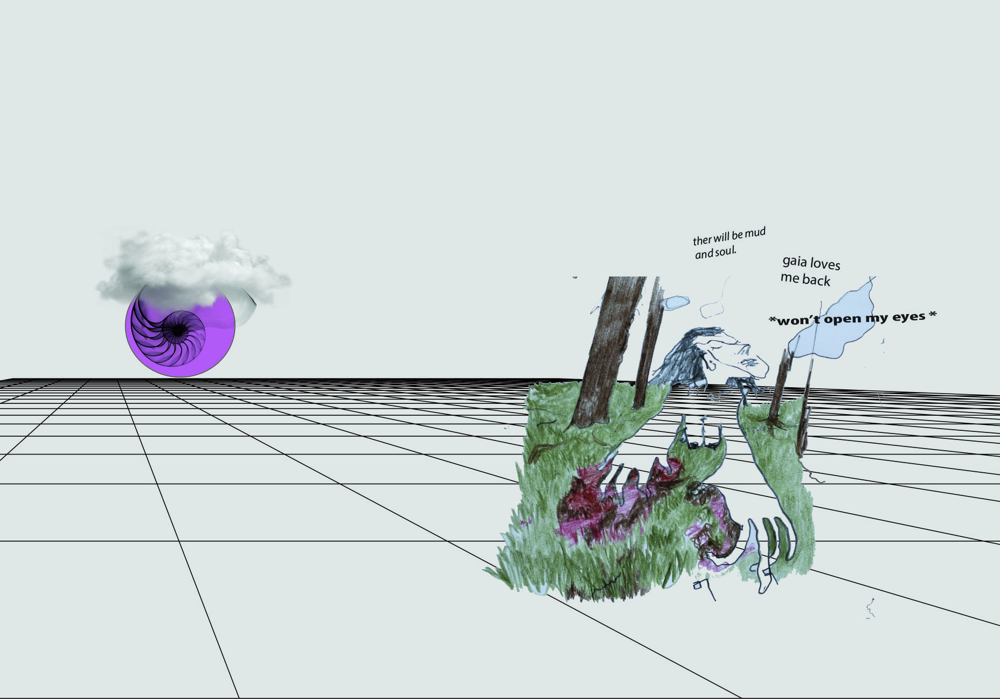

The passing of time is neither slow nor fast in this quaren-time. In the beginning I thought it was slower than usual, but I was mistaken. It is largely eventless and so it feels warped.
There seems to be no present moment. There is nothing here in this moment. These time particles are slipping through without touching me. They have been slipping for a while. The present has not existed for a long time now.
Perhaps having an honest memory of this time would be a challenge. Even though I am working, eating, sleeping and waking, even seeing the sun on many morning's, I am not feeling anything anymore. I'm unable to occupy the present moment.
_______________________
Time is folded within everything - Occurrence of thought, light coming to us from the sun, possibility of sound- the propagation of waves. All percieveable things implicitly carry time. To have a thought is to be witness to the passage of time.
In this text, there are thought experiments for you - the reader. And there are findings of experiments with time and mind. Before the lockdown I was mostly busy 'living' - Observing other human and non human things and being entangled in other being's realities. I never had had such unbroken time of emptiness that creates an infinity room of mirrors in a small space of the mind. self observation can become dangerous. I did not start out with the intention of observing myself. It just happened - as you will see. This text is also explores diverse and well documented ways of time is seen historically and scientificly. You can also, just for fun, explore the structure of language to see how it affects our perception of time - or our ontological view of it -as we go along.
The modern human lives we have created for ourselves are lives with inanimate objects. Nothing ever changes if you don’t change it. Even if there is life around, like indoor house plants, they too have an inanimate presence which is unlike the life of real trees with roots deep inside the earth. In the potted plant scenario- there is a boundary. Soil is containted. Impermeable border for the roots. But its not just a limitation of space that the roots of the potted plant would experience. Roots of two plants are seperate from each other, they have no way of knowing of the other, isolated. No way of establishing a connection, of co-existing. Forever, they are alone and contained within space. Recieving water. But never reaching the water table. Dependent and confined.
I used to roam forests and spent time imagining the entangled roots underneath my feet while looking at the canopy shy high above me.
Tall towering trees that have spent a lot of their time creating/consuming space.
Their knowledge of space so extensive, the leaves of one tree know exactly where the leaves of the neighbouring tree will be. They have grown together and share the ground beneath.
We can live like that with people we have known for very long. Not coming in the way of light of others. If I know you very well, I would know how to be there but not come in the way, I will not block your light.
House plants would never know the joy of being entangled, of not shading the other. I never thought about the feelings of indoor potted plants. They were plants I never thought about. They were so alone, so silent, so humanly there, intentional, predictable and alone, non-chaotic, un-changing that I never thought of saying hello to one. They seem to be in need of help. In the need to be freed. Now I know the thoughts that happen in those pots.
Looping with one-self can get out of hand very quickly like a mic feedbacking with itself. Empty space of the mind is not a safe place. words bounce around and keep bouncing around, repititive, each repetition making it more likely to repeat. In the absence of other sound, the mic gets out of control. The thing about losing ones mind is that one wouldn't even know what is outside it. I definately don't want to lose my mind . Atleast not irreversibly.
Technically, a reversible process is one which can be taken from its initial state to another state, and then back to the initial state without any change to either the system or the surroundings.
Consider this scenario:
You come back home after 2 months of traveling, to see that your apartment has been on a standstill, waiting for you. This creates the illusion that time has somehow not passed (for the apartment). Its state is not a function of time (at the human time scale).
This is not a natural state of things. Outdoors, the rate of change is very rapid. State changes are almost constant and irreversible.
This human eucledian sense of space and living in cuboids with flat surfaces, corners, edges and forced boundries, discrete levels, floors and 'steps', With no growing fractal surfaces and on-going life independent of the human inhabitants. There is control over states. What happens to time in this flat smooth controlled surface? Space, time, body and the space behind our eyes- our mind - are all entangled. Entanglement is a good word in the English language. It is able to express a relationship which is not clean, unidirectional, give and take, cause-and-effect. Entanglement brings forth the idea of a relationship between two or more independent entities such that - the state of one of the entities cannot be determined without also determining something about the state of the other. At a quantum level, two particles whose states are entangled behave in a way that a state change in one particle affects the quantum state of the other particle no matter how far apart they are, they could be light years away from each other. This was lovingly known as 'spooky action at a distance' by Einstien.
Our surrounding space affects our perception of time and our surrounding time creates the space inside our mind that we live in. We cannot 'decouple' these elements. And so the only way to 'know' is not by 'thinking' but by repositioning- by changing space and time. Look at our thoughts in the light of different spaces and look at spaces in the light of different times and look at time in the light of different mental states. (looking and light)
The limit that the lockdown has put on me is haveing a strange affect on my relationship with time and I am becomeing painfully aware of this mind - space - body - time entanglement. Space has become locked down and there is pasage of time that has to be lived - this has put the mind in a special state - it is not going to new places anymore I fear. There is no way to know. 6 months have passed - unable to revolt anymore - it has changed - it asks for little to nothing. I am in a special situation. I am living in a place that I had left behind many years ago to never come back to (for long periods). The surface I am living on is highly eucledian and flat - seperate from soil and high up. For miles and miles there are no forests - only agriculturaly culticated land. This confinement feels too intense. One has always lived on this kind of a surface, but now one is confined to it.
This flat surface with unchanging permenance creates an illusion that things need to be pushed forward with time. Since nohting ever changes or evlves on its own - the capitalistic idea of 'revamping' or 'renewing' florishes - because we like change. Our mind likes new things. So there is the dual pressure - that we must catch up and we must push everything in to the future. Everything must be ‘renewed’ before the future arrives.
TIEM
Certainly, the perception of time - i.e. our time - is different from, say, clock time. At the simplest level, our time is not 'uniform' over time of the day, time of our lives etc. And it is also not independent of unfolding of events around us and the world we live in. Whereas, physical newtonian time pre-exists these phenomenon. It is independent of the existence of the cosmos, of a viewer, of anything at all.
Umwelt is a german word- used to describe ' the world view ' of a being. Perhaps in the same way, 'Tiem' could be used to describe 'time as experienced by a being'. It brings us closer to 'organismic time' rather than ticks-of-a-clock kindof time.
Let's take another step.
Now hypothetically, let's say time is light. The brighter the light, more time is passing as more things are happening. When there is darkness (and there can never be complete darkness) time becomes very very slow.
What the tree does in its life is, it keeps taking light, and using it, to make lots and lots of food and lots of leaves which make even more food. This food is used to grow and become more dense and larger, the water under it evaporates less, there seems to be excess in and around a blooming tree.
Looking at a tree in bloom in the sun looks like a paused explosion. But it isn’t a pause. Its continuously exploding very very slowly. The seed is exploding. It is happening really slowly in our perception.
Time is passing. That is to be imagined as light. As the ‘coming of light’ to us. If light is time passing, then what is darkness. Now suppose you are standing in a dark room, time is still passing. And what about the tree. The tree uses time to make food and grow. It needs light for itself to be making food. And when there is no light, time is sort of not passing. How is our experiential time felt? We sleep and dream and time passes and the tree rests and time passes, but perceptually, what we actually consider ‘time of our lives’ is the waking time. Just before the moment we sleep.
And all the activity in the slow explosion of the tree happens when there is light.
The lockdown has brought darkness. For a while, there was dense darkness, some of us even died. The lights were shut off suddenly.
Some events themselves could be unremarkable, yet as more time passes, the schism becomes a gorge. The state of things has shifted. The farther we come, more we know the state change was irreversible.
Take a step back. The state of the mind.
As a fraction of time of our finite lives passes, and we stand paused, as seasons change, we are going farther and farther away from the feeling of proximity and the possibility of encounters.
Very simply speaking, it seems to me that there is a lot of 'time' but there is no present moment. All the time passes in a pause. A deliberate long pause. Pausing of thoughts is not possible (is very difficult(and its all you can do, if you are doing that) ).
This contradiction is doing something to my mind.
When this is over, we will know something about the plasticicty of our mind. We will find out to what extent this state change was reversible.
If I don't go to a forest and not be present , there is a dulling white noise.
Just floating away into the past lived and future imagined lives… the unlived future is easier to live in than the suspended present. However hard I try, there is nothing in this room that I can live at, exist on. There is nothing to entangle with.
Touch is needed.
With the corona virus 'breakout', we are confined to unchanging flatness of eucledian time and space and yet, control is lost. We did so much for control. Erased all messy, uncalculable, unpredictbale possibilities. The ironic beauty of this is not lost to me. The nature of reality and gaia has revealed its porousity. Unpredictable chaos is beautiful by its very nature because it fails systemic opression. This unpredicatble chaos might kill me, but its beauty is not lost to me.
///////////////////////////////////////////////////
when I imagine myself with you all, with minds reading these words, I am imagining a future where I will be with the others. With you all. The desire so much is to ' be with the a lot or a few people, animals, trees..'. 'To be with others is special' because there is a collective observation. It makes oneself, the others and the enviourment more real. more entanlements, more explosion, more light.
i have understood in this time of isolation that everythign I want to do in my life is towards having many scales of life around me. Touch is needed. Touching a mushroom is a visceral feeling, of touching a life. One touches gently and with anticipation.
I cannot 'see' at all if I am alone. I cannot see anyting and there is nothing to see. It feel like being suspended. I feel like an astronaut. Like a house plant. So far away from everything.
Since we are talking about ' seeing collectivly', must also mention seeing the other is so different from seeing together and when that happens, that is what life is worth living for. I live this isolated present in the hope of holding hands, being together, making sound into the other's sound and existing together.
I want to explode very very slowly, and that will be life.
It would be lucky to get a chance to explode. Not every tree gets the chance, not every plant lives, not every plant is able to have other plants around. And those stories are tragic, but they too, i understand now, live in the dreams of the bloom. Its the only way //
The end ¯\_(ツ)_/¯
